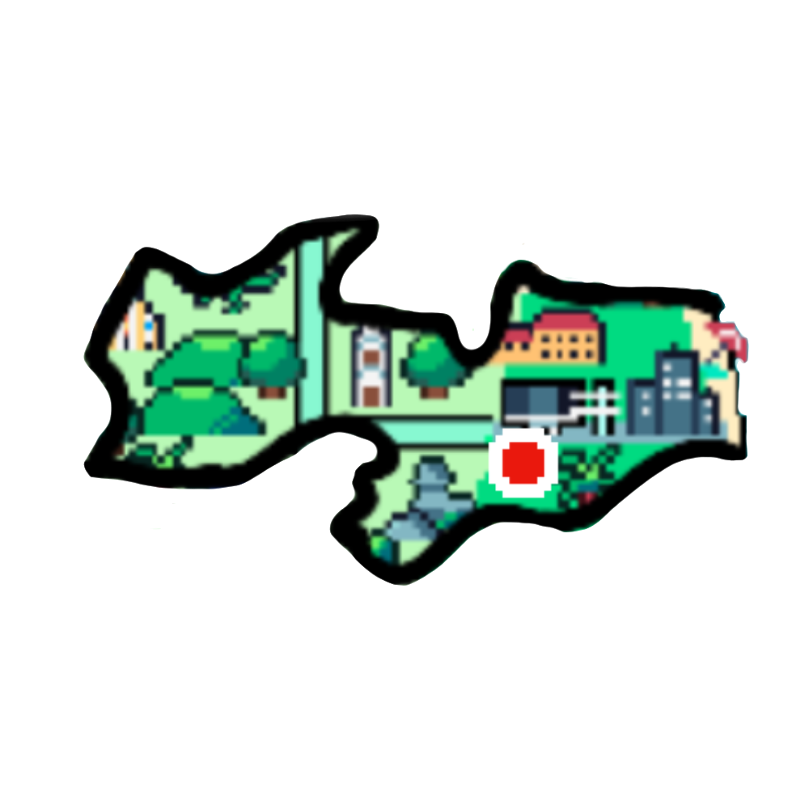

Pelourinho: um dos mais emblemáticos pontos turísticos da Bahia Casas coloridas do Pelourinho, ponto turístico Bahia O Pelourinho é o bairro mais famoso da capital, e é símbolo do Centro Histórico de Salvador Carinhosamente chamado de “Pelô”, o Pelourinho é o bairro de Salvador que abriga a área do Largo Terreiro de Jesus até o Largo do Pelourinho. Cercado de construções do século XVII e XVIII em calçamento “pé de moleque”, com pedras irregulares, o local é símbolo do Centro Histórico de Salvador, tombado pelo IPHAN ( Instituto do Patrimônio Histórico e Artístico Nacional) e reconhecido como Patrimônio da Humanidade pela UNESCO. Lá é possível apreciar casarões preenchidos por ateliês, lojas, museus, bares, restaurantes e até hospedagens, como pequenas pousadas. O som do Olodum, organização cultural que ensina música percussiva, também marca presença. As várias igrejas da região não podem faltar no roteiro. Vale conhecer a Catedral Basílica de Salvador, a Igreja e o Convento da Terceira Ordem de São Francisco e a Igreja de Nossa Senhora do Rosário dos Pretos. Elevador Lacerda: a vista panorâmica mais famosa da Bahia Elevador Lacerda e Baía de Todos os Santos, em Salvador, Bahia O Elevador Lacerda, com 72 m de altura, é o primeiro elevador do mundo a servir como transporte público Mais de Salvador! A capital do estado abriga alguns dos mais famosos pontos turísticos da Bahia, entre eles o Elevador Lacerda. Inaugurado em 1873, o elevador de duas torres, quatro cabines, 72 m e capacidade para mais de 100 pessoas foi o primeiro do mundo a servir de transporte público! Ele liga a Praça Tomé de Sousa, na Cidade Alta, à Praça Cayru, no bairro do Comércio, a Cidade Baixa. A viagem dura cerca de 30 segundos e custa R$ 0,15 por viagem (preço sujeito à alteração). O elevador transporta em média 28 mil pessoas por dia, com funcionamento das 7h às 22h. É impossível passar pela cidade e não ter essa experiência! Aproveite para apreciar a visão panorâmica do alto da passarela do elevador. Mercado Modelo: compras e gastronomia em Salvador Mercado Modelo, em Salvador, na Bahia O Mercado Modelo é point certo para quem gosta de especiarias típicas, souvenirs e pratos baianos Vizinho do Elevador Lacerda, o Mercado Modelo é outra das construções históricas da capital. Datado de 1912, o prédio em estilo neoclássico abriga cerca de 260 lojas onde os turistas podem comprar de especiarias a artesanatos. Durante o passeio, se der sorte, é possível presenciar espetáculos ao som de berimbau e caxixi (instrumentos típicos) e rodas de capoeira. No final do tour, não deixe de ir ao piso de cima e escolher um dos dois restaurantes: Maria de São Pedro ou Camafeu de Oxóssi, onde as delícias marcam presença, seja no cozido de peixe ou na moqueca. O Mercado costuma abrir de segunda a sábado das 9h às 19h e aos domingos e feriados das 9h às 14h, com entrada gratuita. Para mais informações, confira o site oficial. O caminho para chegar na Praça Visconde de Cayru, onde ele está localizado, pode ser feito por meio do Elevador Lacerda. Aproveite o que a capital da Bahia tem de melhor e emende um ponto turístico no outro!

 Paraíba é Localizada na região nordeste do país, um dos menores estados da federação. A população é de cerca de 3,8 milhões de habitantes, sendo a capital João Pessoa. Além da capital, outras cidades de destaque são Campina Grande, Santa Rita, Patos, Souza, Cajazeiras e Cabedelo. O território paraibano apresenta uma planície em seu litoral, que evolui para um planalto mais ao centro, com uma depressão a oeste. Seu clima é tropical no litoral e semi-árido no interior. O ponto mais elevado é o pico do Jabre, na serra do Teixeira, com 1197m.